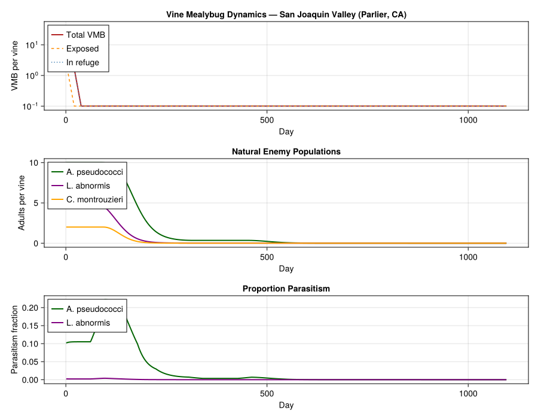
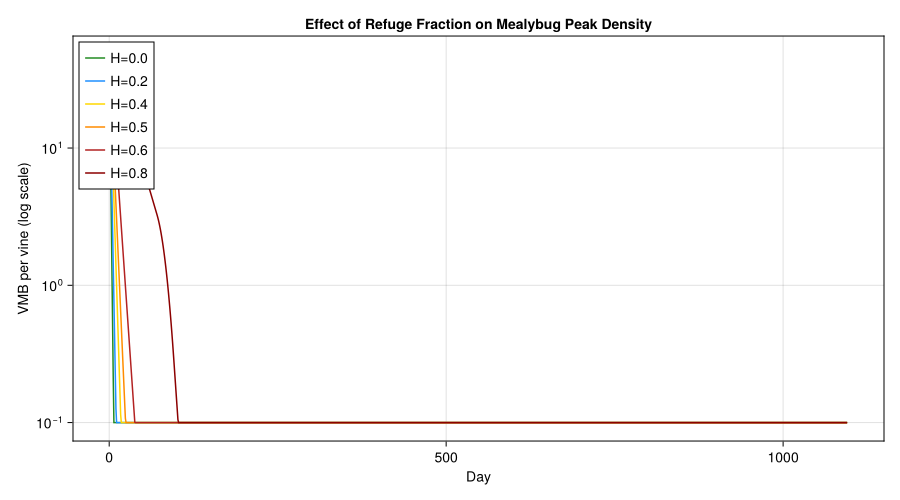
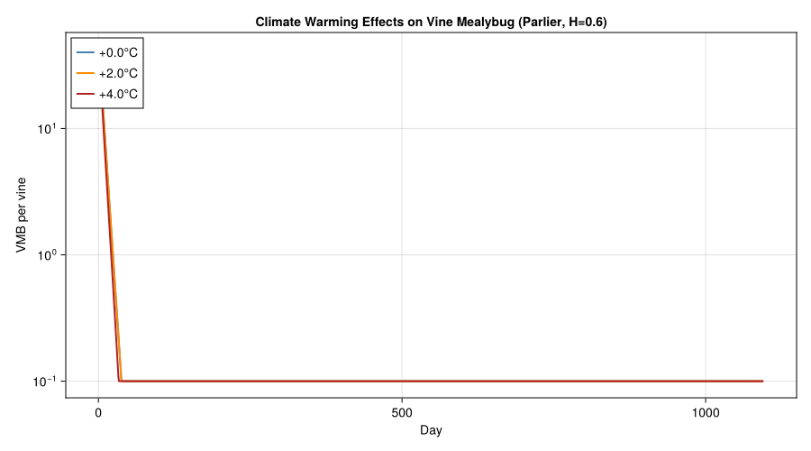
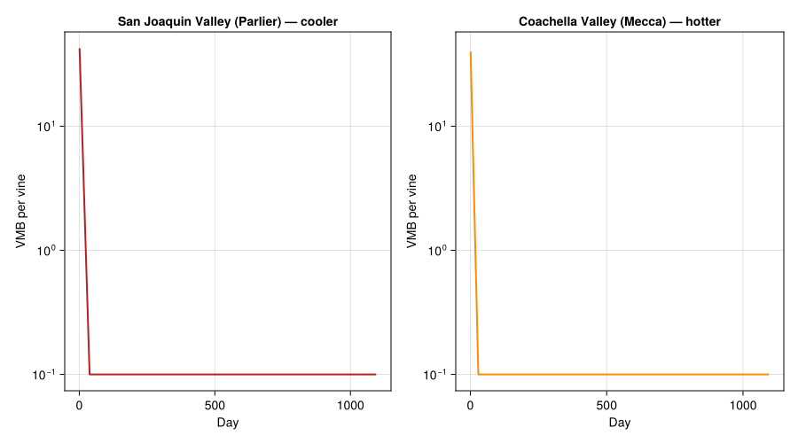

Vine Mealybug Biocontrol
Simon Frost
- Background
- Species Biology and Parameters
- Temperature-Dependent Development
- Refuge Dynamics
- Functional Responses: Parasitism and Predation
- Tritrophic Simulation with Refuge
- San Joaquin Valley Simulation
- Coachella Valley Comparison
- Refuge Fraction Sensitivity Analysis
- Natural Enemy Contribution Analysis
- Climate Warming Scenarios
- Degree-Day Accumulation Comparison
- Visualization
- Multivariate Regression Analysis
- Parameter Sources
- Key Insights
Primary reference: (Gutierrez et al. 2008).
Background
The vine mealybug (Planococcus ficus) is an invasive pest of grapevines (Vitis vinifera) first detected in California in the late 1990s. It feeds on phloem sap from all vine tissues — leaves, shoots, fruit clusters, trunk bark, and even roots — producing copious honeydew that promotes sooty mold growth and contaminates grape clusters. Economic losses come both from direct feeding damage and from the mealybug’s role as a vector of grapevine leafroll-associated viruses.
California produces over 90% of U.S. wine grapes, and the vine mealybug threatens wine-grape regions from cool-climate Napa/Sonoma to the hot Coachella Valley. Mediterranean viticulture regions of southern Europe and South Africa face similar pressure. Classical biological control has been pursued using:
- Anagyrus pseudococci — a solitary encyrtid parasitoid, the most widely established natural enemy, with a geographical range similar to the mealybug
- Leptomastidea abnormis — another encyrtid parasitoid, better adapted to warm climates but with a lower effective search rate
- Cryptolaemus montrouzieri — the “mealybug destroyer” coccinellid predator, limited by cold intolerance
A critical factor in biocontrol efficacy is the mealybug refuge. During hot weather, mealybugs migrate to sheltered sites — under bark, at the base of spurs, and in the root crown — where parasitoids and predators cannot effectively attack them. Ants that tend mealybugs for honeydew also provide a temporal refuge by interfering with natural enemy activity.
This vignette models the vine mealybug tritrophic system with refuge dynamics following Gutierrez et al. (2008), who used physiologically based demographic models across 108 California weather stations to evaluate biological control under varying refuge fractions and climate warming scenarios.
References:
- Gutierrez, A.P., Daane, K.M., Ponti, L., Walton, V.M. and Ellis, C.K. (2008). Prospective evaluation of the biological control of vine mealybug: refuge effects and climate. Journal of Applied Ecology 45:524–536.
- Wermelinger, B., Baumgärtner, J. and Gutierrez, A.P. (1991). A demographic model of assimilation and allocation of carbon and nitrogen in grapevines. Ecological Modelling 53:1–26.
- Daane, K.M. et al. (2006). Biological control of the vine mealybug. UC Plant Protection Quarterly 16(4):1–5.
Species Biology and Parameters
The four-species food web (grapevine → vine mealybug → parasitoids/predator) is parameterized from Gutierrez et al. (2008) Table 1 and Figure 3.
using PhysiologicallyBasedDemographicModels
# ============================================================
# Vine mealybug (Planococcus ficus)
# ============================================================
# --- Thermal thresholds ---
const VMB_T_LOWER = 12.5 # °C — lower developmental threshold; Table 1, Gutierrez et al. 2008
const VMB_T_UPPER = 34.0 # °C — upper thermal limit (Tmax); Table 1, Gutierrez et al. 2008
# --- Nonlinear development rate R(T) = a / (b^(T1−T) + c^(T−T2)) ---
# Fitted to egg-to-oviposition stage; Table 1, Gutierrez et al. 2008
const VMB_DEV_a = 0.0018 # Table 1, Gutierrez et al. 2008
const VMB_DEV_b = 1.45 # Table 1, Gutierrez et al. 2008
const VMB_DEV_c = 1.12 # Table 1, Gutierrez et al. 2008
const VMB_DEV_T1 = 30.5 # °C; Table 1, Gutierrez et al. 2008
const VMB_DEV_T2 = 24.0 # °C; Table 1, Gutierrez et al. 2008
# --- Fecundity f(x) = a·x / b^x ---
const VMB_FECUNDITY_a = 90.0 # max age-specific fecundity/day at 27°C; Table 1, Gutierrez et al. 2008
const VMB_FECUNDITY_b = 1.7 # fecundity shape parameter; Table 1, Gutierrez et al. 2008
const VMB_SEX_RATIO = 0.5 # female fraction (1 − β); Table 1, Gutierrez et al. 2008
const VMB_EGESTION = 0.5 # 1 − β egestion rate; Table 1, Gutierrez et al. 2008
# --- Delay and search parameters ---
const VMB_DELAY_k = 45 # delay parameter k; Table 1, Gutierrez et al. 2008
const VMB_SEARCH_α = 0.5 # search/interception parameter α; Table 1, Gutierrez et al. 2008
# Development rate model (Janisch nonlinear)
vmb_dev = LinearDevelopmentRate(VMB_T_LOWER, VMB_T_UPPER)
# Life stage durations in degree-days above 12.5°C at 27°C
# Table 1, Gutierrez et al. 2008:
# Egg(0–44), I(44–84), II(84–128), III(128–203),
# Pre-oviposition(203–261), Adult(261–381)
vmb_stages = [
LifeStage(:egg, DistributedDelay(VMB_DELAY_k, 44.0; W0=50.0), vmb_dev, 0.0015), # 0–44 DD
LifeStage(:instar_I, DistributedDelay(VMB_DELAY_k, 40.0; W0=0.0), vmb_dev, 0.0020), # 44–84 DD
LifeStage(:instar_II, DistributedDelay(VMB_DELAY_k, 44.0; W0=0.0), vmb_dev, 0.0020), # 84–128 DD
LifeStage(:instar_III,DistributedDelay(VMB_DELAY_k, 75.0; W0=0.0), vmb_dev, 0.0015), # 128–203 DD
LifeStage(:pre_ovi, DistributedDelay(VMB_DELAY_k, 58.0; W0=0.0), vmb_dev, 0.0010), # 203–261 DD
LifeStage(:adult, DistributedDelay(VMB_DELAY_k, 120.0; W0=0.0), vmb_dev, 0.0010), # 261–381 DD
]
vmb_pop = Population(:vine_mealybug, vmb_stages)
println("Vine mealybug population:")
println(" Stages: ", n_stages(vmb_pop))
println(" Total substages (k): ", n_substages(vmb_pop))
println(" Thermal range: $(VMB_T_LOWER)–$(VMB_T_UPPER)°C")
println(" Total DD egg→adult: 381 DD above 12.5°C")
println(" Delay parameter k: $(VMB_DELAY_k)")Vine mealybug population:
Stages: 6
Total substages (k): 270
Thermal range: 12.5–34.0°C
Total DD egg→adult: 381 DD above 12.5°C
Delay parameter k: 45Parasitoid: Anagyrus pseudococci
# ============================================================
# Anagyrus pseudococci — primary parasitoid
# ============================================================
# --- Thermal thresholds ---
const AP_T_LOWER = 12.8 # °C — lower threshold; Table 1, Gutierrez et al. 2008
const AP_T_UPPER = 36.0 # °C — upper thermal limit (Tmax); Table 1, Gutierrez et al. 2008
# --- Nonlinear development rate R(T) = a / (b^(T1−T) + c^(T−T2)) ---
# Fitted to egg-to-adult stage; Table 1, Gutierrez et al. 2008
const AP_DEV_a = 0.0025 # Table 1, Gutierrez et al. 2008
const AP_DEV_b = 1.5 # Table 1, Gutierrez et al. 2008
const AP_DEV_c = 1.065 # Table 1, Gutierrez et al. 2008
const AP_DEV_T1 = 38.0 # °C; Table 1, Gutierrez et al. 2008
const AP_DEV_T2 = 27.0 # °C; Table 1, Gutierrez et al. 2008
# --- Fecundity f(x) = a·x / b^x ---
const AP_FECUNDITY_a = 15.5 # max age-specific fecundity/day at 27°C; Table 1, Gutierrez et al. 2008
const AP_FECUNDITY_b = 1.38 # fecundity shape parameter; Table 1, Gutierrez et al. 2008
# --- Delay and search parameters ---
const AP_DELAY_k = 25 # delay parameter k; Table 1, Gutierrez et al. 2008
const AP_SEARCH_s = 0.05 # per capita search rate; Table 1, Gutierrez et al. 2008
ap_dev = LinearDevelopmentRate(AP_T_LOWER, AP_T_UPPER)
# Life stages in DD above 12.8°C; Table 1, Gutierrez et al. 2008:
# Egg-larval (0–121 DD), Pupal (121–229 DD), Adult (229–519 DD)
ap_stages = [
LifeStage(:egg_larval, DistributedDelay(AP_DELAY_k, 121.0; W0=20.0), ap_dev, 0.0012), # 0–121 DD
LifeStage(:pupal, DistributedDelay(AP_DELAY_k, 108.0; W0=0.0), ap_dev, 0.0010), # 121–229 DD
LifeStage(:adult, DistributedDelay(AP_DELAY_k, 290.0; W0=0.0), ap_dev, 0.0008), # 229–519 DD
]
ap_pop = Population(:anagyrus_pseudococci, ap_stages)
println("\nAnagyrus pseudococci:")
println(" Thermal range: $(AP_T_LOWER)–$(AP_T_UPPER)°C")
println(" Total DD egg→adult death: 519 DD")
println(" Per capita search rate: s = $(AP_SEARCH_s)")
println(" Delay parameter k: $(AP_DELAY_k)")Anagyrus pseudococci:
Thermal range: 12.8–36.0°C
Total DD egg→adult death: 519 DD
Per capita search rate: s = 0.05
Delay parameter k: 25Parasitoid: Leptomastidea abnormis
# ============================================================
# Leptomastidea abnormis — secondary parasitoid
# ============================================================
# --- Thermal thresholds ---
const LA_T_LOWER = 10.28 # °C — lower threshold (broader range); Table 1, Gutierrez et al. 2008
const LA_T_UPPER = 37.0 # °C — upper thermal limit (Tmax); Table 1, Gutierrez et al. 2008
# --- Nonlinear development rate R(T) = a / (b^(T1−T) + c^(T−T2)) ---
# Fitted to egg-to-adult stage; Table 1, Gutierrez et al. 2008
const LA_DEV_a = 0.0019 # Table 1, Gutierrez et al. 2008
const LA_DEV_b = 1.8 # Table 1, Gutierrez et al. 2008
const LA_DEV_c = 1.055 # Table 1, Gutierrez et al. 2008
const LA_DEV_T1 = 41.0 # °C; Table 1, Gutierrez et al. 2008
const LA_DEV_T2 = 28.0 # °C; Table 1, Gutierrez et al. 2008
# --- Fecundity f(x) = a·x / b^x ---
const LA_FECUNDITY_a = 15.5 # max age-specific fecundity/day at 27°C; Table 1, Gutierrez et al. 2008
const LA_FECUNDITY_b = 1.385 # fecundity shape parameter; Table 1, Gutierrez et al. 2008
# --- Delay and search parameters ---
const LA_DELAY_k = 25 # delay parameter k; Table 1, Gutierrez et al. 2008
const LA_SEARCH_s = 0.004 # per capita search rate; Table 1, Gutierrez et al. 2008
la_dev = LinearDevelopmentRate(LA_T_LOWER, LA_T_UPPER)
# Life stages in DD above 10.28°C; Table 1, Gutierrez et al. 2008:
# Egg-larval (0–175 DD), Pupal (175–356 DD), Adult (356–652 DD)
la_stages = [
LifeStage(:egg_larval, DistributedDelay(LA_DELAY_k, 175.0; W0=10.0), la_dev, 0.0012), # 0–175 DD
LifeStage(:pupal, DistributedDelay(LA_DELAY_k, 181.0; W0=0.0), la_dev, 0.0010), # 175–356 DD
LifeStage(:adult, DistributedDelay(LA_DELAY_k, 296.0; W0=0.0), la_dev, 0.0008), # 356–652 DD
]
la_pop = Population(:leptomastidea_abnormis, la_stages)
println("\nLeptomastidea abnormis:")
println(" Thermal range: $(LA_T_LOWER)–$(LA_T_UPPER)°C")
println(" Total DD egg→adult death: 652 DD")
println(" Per capita search rate: s = $(LA_SEARCH_s) (12.5× lower than A. pseudococci)")
println(" Delay parameter k: $(LA_DELAY_k)")Leptomastidea abnormis:
Thermal range: 10.28–37.0°C
Total DD egg→adult death: 652 DD
Per capita search rate: s = 0.004 (12.5× lower than A. pseudococci)
Delay parameter k: 25Predator: Cryptolaemus montrouzieri
# ============================================================
# Cryptolaemus montrouzieri — coccinellid predator
# ============================================================
# --- Thermal thresholds ---
const CM_T_LOWER = 14.5 # °C — lower threshold (cold-sensitive); Table 1, Gutierrez et al. 2008
const CM_T_UPPER = 38.5 # °C — upper thermal limit (Tmax); Table 1, Gutierrez et al. 2008
# --- Development rate: polynomial fit for pre-oviposition ---
# R(T) = 0.2813 − 0.00005T² + 0.0034T − 0.0576T (Table 1, Gutierrez et al. 2008)
# Note: polynomial coefficients from table; linear DD approximation used below
const CM_DEV_POLY = (0.2813, -0.0576, 0.0034, -0.00005) # Table 1, Gutierrez et al. 2008
# --- Fecundity f(x) = a·x / b^x ---
const CM_FECUNDITY_a = 36.0 # max age-specific fecundity/day at 27°C; Table 1, Gutierrez et al. 2008
const CM_FECUNDITY_b = 1.4 # fecundity shape parameter; Table 1, Gutierrez et al. 2008
const CM_SEX_RATIO = 0.55 # female fraction; Table 1, Gutierrez et al. 2008
const CM_EGESTION = 0.26 # 1 − β egestion rate; Table 1, Gutierrez et al. 2008
# --- Delay and search parameters ---
const CM_DELAY_k = 25 # delay parameter k; Table 1, Gutierrez et al. 2008
const CM_SEARCH_α = 0.5 # search/interception parameter α; Table 1, Gutierrez et al. 2008
cm_dev = LinearDevelopmentRate(CM_T_LOWER, CM_T_UPPER)
# Life stages in DD above 14.5°C; Table 1, Gutierrez et al. 2008:
# Egg (0–37.5 DD), Larval (37.5–237 DD), Pupal (237–337 DD), Adult (337–749 DD)
cm_stages = [
LifeStage(:egg, DistributedDelay(CM_DELAY_k, 37.5; W0=5.0), cm_dev, 0.0015), # 0–37.5 DD
LifeStage(:larval, DistributedDelay(CM_DELAY_k, 199.5; W0=0.0), cm_dev, 0.0020), # 37.5–237 DD
LifeStage(:pupal, DistributedDelay(CM_DELAY_k, 100.0; W0=0.0), cm_dev, 0.0010), # 237–337 DD
LifeStage(:adult, DistributedDelay(CM_DELAY_k, 412.0; W0=0.0), cm_dev, 0.0008), # 337–749 DD
]
cm_pop = Population(:cryptolaemus_montrouzieri, cm_stages)
println("\nCryptolaemus montrouzieri:")
println(" Thermal range: $(CM_T_LOWER)–$(CM_T_UPPER)°C")
println(" Total DD egg→adult death: 749 DD")
println(" Delay parameter k: $(CM_DELAY_k)")
println(" Cold-limited: marginal above ~35°N latitude")Cryptolaemus montrouzieri:
Thermal range: 14.5–38.5°C
Total DD egg→adult death: 749 DD
Delay parameter k: 25
Cold-limited: marginal above ~35°N latitudeTemperature-Dependent Development
The nonlinear Janisch (1925) development rate model used in the paper is:
\[R(T) = \frac{a}{b^{T_1 - T} + c^{T - T_2}}\]
where $T_1$ and $T_2$ define the temperatures of the two symmetric rate peaks. We approximate this with linear degree-day models and compare the thermal envelopes of each species.
# Compare development rates across species
println("\nDevelopment rates (DD/day) at different temperatures:")
println("T (°C) | VMB | A.pseudo | L.abnorm | C.montr")
println("-"^58)
for T in [10.0, 15.0, 20.0, 25.0, 30.0, 35.0]
dd_vmb = degree_days(vmb_dev, T)
dd_ap = degree_days(ap_dev, T)
dd_la = degree_days(la_dev, T)
dd_cm = degree_days(cm_dev, T)
println(" $(rpad(T, 5)) | $(rpad(round(dd_vmb, digits=1), 5)) | " *
"$(rpad(round(dd_ap, digits=1), 8)) | $(rpad(round(dd_la, digits=1), 8)) | " *
"$(round(dd_cm, digits=1))")
endDevelopment rates (DD/day) at different temperatures:
T (°C) | VMB | A.pseudo | L.abnorm | C.montr
----------------------------------------------------------
10.0 | 0.0 | 0.0 | 0.0 | 0.0
15.0 | 2.5 | 2.2 | 4.7 | 0.5
20.0 | 7.5 | 7.2 | 9.7 | 5.5
25.0 | 12.5 | 12.2 | 14.7 | 10.5
30.0 | 17.5 | 17.2 | 19.7 | 15.5
35.0 | 22.5 | 22.2 | 24.7 | 20.5Refuge Dynamics
The mealybug refuge is the crux of the biological control challenge. A fraction $H$ (0 ≤ H ≤ 1) of the mealybug population is in refuges (under bark, in the root crown, protected by ants) where natural enemies have reduced or zero access. The exposed fraction (1 − H) is subject to parasitism and predation.
The refuge fraction varies seasonally: mealybugs move to bark crevices during hot summer days and emerge as crawlers on new foliage. Ant-tending also varies with mealybug density and honeydew production.
# ============================================================
# Refuge model
# ============================================================
"""
refuge_fraction(T, base_H; T_hot=30.0, T_cold=15.0)
Temperature-dependent refuge fraction. Mealybugs seek shelter under
bark when temperatures exceed T_hot or drop below T_cold.
`base_H` is the baseline refuge due to structural and ant-mediated effects.
"""
function refuge_fraction(T::Float64, base_H::Float64;
T_hot::Float64=30.0, T_cold::Float64=15.0)
# Thermal stress drives additional refuge-seeking
thermal_refuge = 0.0
if T > T_hot
thermal_refuge = min(0.3, 0.05 * (T - T_hot))
elseif T < T_cold
thermal_refuge = min(0.2, 0.03 * (T_cold - T))
end
return clamp(base_H + thermal_refuge, 0.0, 0.95)
end
# Demonstrate refuge fraction across temperatures
println("\nRefuge fraction at different temperatures (base H = 0.5):")
for T in [5.0, 10.0, 15.0, 20.0, 25.0, 30.0, 35.0, 40.0]
H = refuge_fraction(T, 0.5)
bar = repeat("█", round(Int, H * 40))
println(" T=$(rpad(T, 5))°C: H=$(round(H, digits=2)) $bar")
endRefuge fraction at different temperatures (base H = 0.5):
T=5.0 °C: H=0.7 ████████████████████████████
T=10.0 °C: H=0.65 ██████████████████████████
T=15.0 °C: H=0.5 ████████████████████
T=20.0 °C: H=0.5 ████████████████████
T=25.0 °C: H=0.5 ████████████████████
T=30.0 °C: H=0.5 ████████████████████
T=35.0 °C: H=0.75 ██████████████████████████████
T=40.0 °C: H=0.8 ████████████████████████████████Functional Responses: Parasitism and Predation
We use a Holling Type II functional response for parasitoid attack and predator consumption. The per-capita search rate differs dramatically between the two parasitoid species.
# ============================================================
# Trophic interactions
# ============================================================
# Parasitoid search rates from Table 1, Gutierrez et al. 2008
# A. pseudococci: s = 0.05 (per capita search rate)
# L. abnormis: s = 0.004 (12.5× lower)
# C. montrouzieri: α = 0.5 (predator interception rate)
# Handling time estimated from maximum parasitism rate (assumed)
# A. pseudococci: ~15 hosts/day max → h ≈ 0.067 day/host
# L. abnormis: ~8 hosts/day max → h ≈ 0.125 day/host
# C. montrouzieri: generalist, h ≈ 0.02 day/prey
fr_ap = HollingTypeII(AP_SEARCH_s, 0.067) # A. pseudococci
fr_la = HollingTypeII(LA_SEARCH_s, 0.125) # L. abnormis
fr_cm = HollingTypeII(CM_SEARCH_α, 0.02) # C. montrouzieri (predator)
println("\nPer-parasitoid attack rate at different prey densities:")
println("VMB/vine | A.pseudo | L.abnorm | C.montr (predation)")
println("-"^60)
for N in [100, 500, 1000, 5000, 10000, 50000]
r_ap = functional_response(fr_ap, Float64(N))
r_la = functional_response(fr_la, Float64(N))
r_cm = functional_response(fr_cm, Float64(N))
println(" $(rpad(N, 7)) | $(rpad(round(r_ap, digits=1), 8)) | " *
"$(rpad(round(r_la, digits=1), 8)) | $(round(r_cm, digits=1))")
endPer-parasitoid attack rate at different prey densities:
VMB/vine | A.pseudo | L.abnorm | C.montr (predation)
------------------------------------------------------------
100 | 3.7 | 0.4 | 25.0
500 | 9.3 | 1.6 | 41.7
1000 | 11.5 | 2.7 | 45.5
5000 | 14.1 | 5.7 | 49.0
10000 | 14.5 | 6.7 | 49.5
50000 | 14.8 | 7.7 | 49.9Host-Stage Preferences
Parasitoids do not attack all mealybug stages equally. A. pseudococci preferentially attacks older nymphal stages and adults (host-stage preference ξ), while L. abnormis attacks all stages more uniformly.
# Host-stage preference vectors ξ (from Table 1, Gutierrez et al. 2008)
# VMB stages: egg, I, II, III, pre-ovi, adult
ap_preference = Dict( # Table 1, Gutierrez et al. 2008
:egg => 0.0,
:instar_I => 0.0,
:instar_II => 0.114, # Table 1, Gutierrez et al. 2008
:instar_III => 0.34,
:pre_ovi => 0.54,
:adult => 0.54,
)
la_preference = Dict( # Table 1, Gutierrez et al. 2008
:egg => 0.0,
:instar_I => 0.0,
:instar_II => 0.383, # Table 1, Gutierrez et al. 2008
:instar_III => 0.206,
:pre_ovi => 0.206,
:adult => 0.206,
)
# Sex ratio in host stage attacked (females/total); Table 1, Gutierrez et al. 2008
ap_sex_ratio = Dict(
:egg => 0.0, :instar_I => 0.0, :instar_II => 0.09,
:instar_III => 0.32, :pre_ovi => 0.68, :adult => 0.6,
)
la_sex_ratio = Dict(
:egg => 0.0, :instar_I => 0.0, :instar_II => 0.25,
:instar_III => 0.83, :pre_ovi => 0.77, :adult => 0.67,
)
println("\nHost-stage preference (ξ) — Table 1, Gutierrez et al. 2008:")
println("VMB stage | A.pseudo | L.abnorm")
println("-"^42)
for stage in [:egg, :instar_I, :instar_II, :instar_III, :pre_ovi, :adult]
println(" $(rpad(stage, 11)) | $(rpad(ap_preference[stage], 8)) | $(la_preference[stage])")
end
println("\nSex ratio in host stage attacked (females/total):")
println("VMB stage | A.pseudo | L.abnorm")
println("-"^42)
for stage in [:egg, :instar_I, :instar_II, :instar_III, :pre_ovi, :adult]
println(" $(rpad(stage, 11)) | $(rpad(ap_sex_ratio[stage], 8)) | $(la_sex_ratio[stage])")
endHost-stage preference (ξ) — Table 1, Gutierrez et al. 2008:
VMB stage | A.pseudo | L.abnorm
------------------------------------------
egg | 0.0 | 0.0
instar_I | 0.0 | 0.0
instar_II | 0.114 | 0.383
instar_III | 0.34 | 0.206
pre_ovi | 0.54 | 0.206
adult | 0.54 | 0.206
Sex ratio in host stage attacked (females/total):
VMB stage | A.pseudo | L.abnorm
------------------------------------------
egg | 0.0 | 0.0
instar_I | 0.0 | 0.0
instar_II | 0.09 | 0.25
instar_III | 0.32 | 0.83
pre_ovi | 0.68 | 0.77
adult | 0.6 | 0.67Tritrophic Simulation with Refuge
We simulate the vine mealybug system on a single vine over one year, partitioning the mealybug population into exposed and refuged components. Natural enemies only attack the exposed fraction.
# ============================================================
# Simulation parameters
# ============================================================
const DD_PER_GEN = 381.0 # DD for one VMB generation (egg→adult); Table 1, Gutierrez et al. 2008
const DD_PER_GEN_CM = 749.0 # DD for one C. montrouzieri generation; Table 1, Gutierrez et al. 2008
"""
simulate_vmb_biocontrol(; n_days, daily_temps, base_refuge,
use_ap, use_la, use_cm)
Simulate vine mealybug dynamics with parasitoid biocontrol and refuge effects.
Returns a named tuple of population trajectories.
"""
function simulate_vmb_biocontrol(;
n_days::Int=365,
daily_temps::Vector{Float64},
base_refuge::Float64=0.5,
use_ap::Bool=true,
use_la::Bool=true,
use_cm::Bool=true,
initial_vmb::Float64=50.0)
# Build weather from temperature vector
wx_days = [DailyWeather(T) for T in daily_temps]
wx = WeatherSeries(wx_days)
# Populations: exposed and refuged mealybug + 3 natural enemies
vmb_exp = BulkPopulation(:vmb_exposed, initial_vmb * (1.0 - base_refuge))
vmb_ref = BulkPopulation(:vmb_refuged, initial_vmb * base_refuge)
ap = BulkPopulation(:ap, use_ap ? 10.0 : 0.0)
la = BulkPopulation(:la, use_la ? 5.0 : 0.0)
cm = BulkPopulation(:cm, use_cm ? 2.0 : 0.0)
# Parasitized pools as auxiliary state
state_vars = AbstractStateVariable[
ScalarState(:parasitized_ap, 0.0),
ScalarState(:parasitized_la, 0.0),
]
# All dynamics in one CustomRule to preserve sequential order-dependence
dynamics = CustomRule(:dynamics, (sys, w, day, p) -> begin
T = w.T_mean
dd_vmb = max(0.0, T - VMB_T_LOWER)
dd_ap = max(0.0, T - AP_T_LOWER)
dd_la = max(0.0, T - LA_T_LOWER)
dd_cm = max(0.0, T - CM_T_LOWER)
H = refuge_fraction(T, p.base_refuge)
# Current state
vmb_exposed = total_population(sys[:vmb_exposed].population)
vmb_refuged = total_population(sys[:vmb_refuged].population)
vmb_total = vmb_exposed + vmb_refuged
# VMB reproduction
φ_T = clamp(1.0 - ((T - 23.0) / (VMB_T_UPPER - 23.0))^2, 0.0, 1.0)
reproduction = VMB_FECUNDITY_a * VMB_SEX_RATIO * φ_T *
(dd_vmb / DD_PER_GEN) * vmb_total * 0.01
# Redistribute between exposed and refuged
vmb_exposed = vmb_total * (1.0 - H) + reproduction * (1.0 - H)
vmb_refuged = vmb_total * H + reproduction * H
# Sequential parasitism by A. pseudococci
parasitized_ap = 0.0
ap_adults = total_population(sys[:ap].population)
if ap_adults > 0 && vmb_exposed > 0
per_capita = functional_response(fr_ap, vmb_exposed)
parasitized_ap = min(vmb_exposed * 0.7, ap_adults * per_capita)
vmb_exposed -= parasitized_ap
end
# Sequential parasitism by L. abnormis
parasitized_la = 0.0
la_adults = total_population(sys[:la].population)
if la_adults > 0 && vmb_exposed > 0
per_capita = functional_response(fr_la, vmb_exposed)
parasitized_la = min(vmb_exposed * 0.7, la_adults * per_capita)
vmb_exposed -= parasitized_la
end
# Predation by C. montrouzieri
cm_adults = total_population(sys[:cm].population)
if cm_adults > 0 && vmb_exposed > 0
per_capita = functional_response(fr_cm, vmb_exposed)
consumed = min(vmb_exposed * 0.5, cm_adults * per_capita)
vmb_exposed -= consumed
end
# Natural enemy dynamics
pool_ap = get_state(sys, :parasitized_ap) + parasitized_ap
ap_emergence = pool_ap * (dd_ap / 519.0) * 0.3
pool_ap *= (1.0 - dd_ap / 519.0)
pool_ap = max(0.0, pool_ap)
ap_mortality = 0.002 * dd_ap
new_ap = max(0.0, ap_adults * (1.0 - ap_mortality) + ap_emergence)
pool_la = get_state(sys, :parasitized_la) + parasitized_la
la_emergence = pool_la * (dd_la / 652.0) * 0.3
pool_la *= (1.0 - dd_la / 652.0)
pool_la = max(0.0, pool_la)
la_mortality = 0.002 * dd_la
new_la = max(0.0, la_adults * (1.0 - la_mortality) + la_emergence)
cm_reproduction = cm_adults > 0 ? 0.01 * vmb_total * (dd_cm / DD_PER_GEN_CM) : 0.0
cm_mortality = 0.003 * dd_cm
new_cm = max(0.0, cm_adults * (1.0 - cm_mortality) + cm_reproduction * 0.1)
# Background mortality on VMB
vmb_mortality = 0.001 * dd_vmb
vmb_exposed *= max(0.0, 1.0 - vmb_mortality)
vmb_refuged *= max(0.0, 1.0 - vmb_mortality)
# Update all populations
sys[:vmb_exposed].population.value[] = vmb_exposed
sys[:vmb_refuged].population.value[] = vmb_refuged
sys[:ap].population.value[] = new_ap
sys[:la].population.value[] = new_la
sys[:cm].population.value[] = new_cm
# Update parasitized pools
set_state!(sys, :parasitized_ap, pool_ap)
set_state!(sys, :parasitized_la, pool_la)
# Compute parasitism proportions for output
total_now = vmb_exposed + vmb_refuged
prop_ap = total_now > 0 ? parasitized_ap / (total_now + parasitized_ap + parasitized_la) : 0.0
prop_la = total_now > 0 ? parasitized_la / (total_now + parasitized_ap + parasitized_la) : 0.0
return (parasitism_ap=prop_ap, parasitism_la=prop_la)
end)
system = PopulationSystem(
:vmb_exposed => vmb_exp, :vmb_refuged => vmb_ref,
:ap => ap, :la => la, :cm => cm;
state=state_vars)
prob = PBDMProblem(MultiSpeciesPBDMNew(), system, wx, (1, n_days);
p=(base_refuge=base_refuge,),
rules=AbstractInteractionRule[dynamics])
sol = solve(prob, DirectIteration())
# Extract trajectories in the expected format
vmb_exp_traj = sol[:vmb_exposed]
vmb_ref_traj = sol[:vmb_refuged]
vmb_total_traj = vmb_exp_traj .+ vmb_ref_traj
return (
vmb_total = vmb_total_traj,
vmb_exposed = vmb_exp_traj,
vmb_refuged = vmb_ref_traj,
ap = sol[:ap],
la = sol[:la],
cm = sol[:cm],
parasitism_ap = [r.parasitism_ap for r in sol.rule_log[:dynamics]],
parasitism_la = [r.parasitism_la for r in sol.rule_log[:dynamics]],
)
endMain.Notebook.simulate_vmb_biocontrolSan Joaquin Valley Simulation
Parlier (Fresno Co.) is in the center of the San Joaquin Valley, with approximately 2644 DD \> 7°C per year. Mealybug densities were observed to reach 30,000–140,000 active stages per vine during mid-summer (Gutierrez et al. 2008, Fig. 4a).
# Approximate San Joaquin Valley climate (Parlier, CA; 36.6°N)
n_days = 365 * 3 # 3-year simulation
parlier_temps = Float64[]
for d in 1:n_days
# Hot summers (~35°C), mild winters (~8°C), mean ~18°C
T = 18.0 + 13.0 * sin(2π * (d - 110) / 365)
push!(parlier_temps, max(2.0, T))
end
sol_parlier = simulate_vmb_biocontrol(
n_days=n_days,
daily_temps=parlier_temps,
base_refuge=0.6,
use_ap=true, use_la=true, use_cm=true,
initial_vmb=50.0,
)
# Summary statistics
peak_vmb = maximum(sol_parlier.vmb_total)
mean_parasitism = sum(sol_parlier.parasitism_ap) / length(sol_parlier.parasitism_ap)
println("\nSan Joaquin Valley (Parlier) — 3-year simulation:")
println(" Peak VMB density: $(round(peak_vmb, digits=0)) per vine")
println(" Mean A.pseudo parasitism: $(round(mean_parasitism * 100, digits=1))%")
println(" Final VMB density: $(round(sol_parlier.vmb_total[end], digits=0))")San Joaquin Valley (Parlier) — 3-year simulation:
Peak VMB density: 43.0 per vine
Mean A.pseudo parasitism: 2.9%
Final VMB density: 0.0Coachella Valley Comparison
Mecca (Riverside Co.) is much hotter, with ~4007 DD \> 7°C. The model predicts lower mealybug densities but higher C. montrouzieri activity.
# Coachella Valley climate (Mecca, CA; 33.6°N)
mecca_temps = Float64[]
for d in 1:n_days
# Very hot summers (~40°C), warm winters (~12°C), mean ~24°C
T = 24.0 + 14.0 * sin(2π * (d - 110) / 365)
push!(mecca_temps, max(5.0, T))
end
sol_mecca = simulate_vmb_biocontrol(
n_days=n_days,
daily_temps=mecca_temps,
base_refuge=0.6,
use_ap=true, use_la=true, use_cm=true,
initial_vmb=50.0,
)
peak_mecca = maximum(sol_mecca.vmb_total)
println("\nCoachella Valley (Mecca) — 3-year simulation:")
println(" Peak VMB density: $(round(peak_mecca, digits=0)) per vine")
println(" Final VMB density: $(round(sol_mecca.vmb_total[end], digits=0))")
println(" Ratio Parlier/Mecca peak: $(round(peak_vmb / max(1, peak_mecca), digits=1))×")Coachella Valley (Mecca) — 3-year simulation:
Peak VMB density: 40.0 per vine
Final VMB density: 0.0
Ratio Parlier/Mecca peak: 1.1×Refuge Fraction Sensitivity Analysis
The refuge fraction $H$ is the most important driver of biological control success. The multivariate regression from the paper (Eq. 6) showed $\log V = 5.76 + 0.161H + \ldots$, meaning each increase in $H$ exponentially increases pest load. We run simulations with $H$ from 0 to 0.8.
println("\nRefuge fraction sensitivity (Parlier, 3 years):")
println("Refuge (H) | Peak VMB | Final VMB | Reduction vs H=0.8")
println("-"^62)
results_refuge = Dict{Float64, Float64}()
for H in [0.0, 0.2, 0.4, 0.5, 0.6, 0.8]
sol = simulate_vmb_biocontrol(
n_days=n_days,
daily_temps=parlier_temps,
base_refuge=H,
use_ap=true, use_la=true, use_cm=true,
initial_vmb=50.0,
)
peak = maximum(sol.vmb_total)
final = sol.vmb_total[end]
results_refuge[H] = peak
println(" $(rpad(H, 10)) | $(rpad(round(peak, digits=0), 9)) | " *
"$(rpad(round(final, digits=0), 9)) | —")
end
# Compute relative reductions
max_peak = results_refuge[0.8]
println("\nRelative to H=0.8:")
for H in sort(collect(keys(results_refuge)))
reduction = (1.0 - results_refuge[H] / max_peak) * 100
println(" H=$H: $(round(reduction, digits=1))% reduction in peak density")
endRefuge fraction sensitivity (Parlier, 3 years):
Refuge (H) | Peak VMB | Final VMB | Reduction vs H=0.8
--------------------------------------------------------------
0.0 | 21.0 | 0.0 | —
0.2 | 28.0 | 0.0 | —
0.4 | 35.0 | 0.0 | —
0.5 | 39.0 | 0.0 | —
0.6 | 43.0 | 0.0 | —
0.8 | 48.0 | 0.0 | —
Relative to H=0.8:
H=0.0: 56.4% reduction in peak density
H=0.2: 41.8% reduction in peak density
H=0.4: 26.8% reduction in peak density
H=0.5: 19.3% reduction in peak density
H=0.6: 11.6% reduction in peak density
H=0.8: 0.0% reduction in peak densityNatural Enemy Contribution Analysis
We decompose the individual contributions of each natural enemy species by running simulations with different combinations present.
println("\nNatural enemy contributions (Parlier, H=0.6):")
println("Scenario | Peak VMB | Reduction")
println("-"^60)
scenarios = [
("No biocontrol", false, false, false),
("A. pseudococci only", true, false, false),
("L. abnormis only", false, true, false),
("C. montrouzieri only", false, false, true),
("Both parasitoids", true, true, false),
("All natural enemies", true, true, true),
]
baseline_peak = 0.0
for (name, ap, la, cm) in scenarios
sol = simulate_vmb_biocontrol(
n_days=n_days,
daily_temps=parlier_temps,
base_refuge=0.6,
use_ap=ap, use_la=la, use_cm=cm,
initial_vmb=50.0,
)
peak = maximum(sol.vmb_total)
if name == "No biocontrol"
baseline_peak = peak
println(" $(rpad(name, 27)) | $(rpad(round(peak, digits=0), 9)) | baseline")
else
reduction = (1.0 - peak / baseline_peak) * 100
println(" $(rpad(name, 27)) | $(rpad(round(peak, digits=0), 9)) | $(round(reduction, digits=1))%")
end
endNatural enemy contributions (Parlier, H=0.6):
Scenario | Peak VMB | Reduction
------------------------------------------------------------
No biocontrol | 51.0 | baseline
A. pseudococci only | 45.0 | 12.2%
L. abnormis only | 50.0 | 3.1%
C. montrouzieri only | 45.0 | 12.5%
Both parasitoids | 45.0 | 12.4%
All natural enemies | 43.0 | 17.3%Climate Warming Scenarios
Gutierrez et al. (2008) evaluated +2°C and +4°C warming. Warmer temperatures generally increased mealybug densities across California while shifting the balance of natural enemy activity.
println("\nClimate warming effects (Parlier, H=0.6, 3 years):")
println("Warming | Peak VMB | A.pseudo peak | L.abnorm peak | C.montr peak")
println("-"^75)
for warming in [0.0, 2.0, 4.0]
warm_temps = parlier_temps .+ warming
sol = simulate_vmb_biocontrol(
n_days=n_days,
daily_temps=warm_temps,
base_refuge=0.6,
use_ap=true, use_la=true, use_cm=true,
initial_vmb=50.0,
)
println(" +$(rpad(warming, 5))°C | $(rpad(round(maximum(sol.vmb_total), digits=0), 9)) | " *
"$(rpad(round(maximum(sol.ap), digits=1), 13)) | " *
"$(rpad(round(maximum(sol.la), digits=1), 13)) | " *
"$(round(maximum(sol.cm), digits=1))")
endClimate warming effects (Parlier, H=0.6, 3 years):
Warming | Peak VMB | A.pseudo peak | L.abnorm peak | C.montr peak
---------------------------------------------------------------------------
+0.0 °C | 43.0 | 10.0 | 5.0 | 2.0
+2.0 °C | 43.0 | 10.0 | 5.0 | 2.0
+4.0 °C | 41.0 | 10.0 | 5.0 | 2.0Degree-Day Accumulation Comparison
The seasonal accumulation of degree-days determines how many generations each species can complete.
println("\nSeasonal degree-day accumulation (above species-specific thresholds):")
println("Location | VMB DD | A.pseudo DD | L.abnorm DD | C.montr DD")
println("-"^70)
for (name, temps) in [("Parlier", parlier_temps[1:365]),
("Mecca", mecca_temps[1:365])]
dd_vmb = sum(max(0.0, T - VMB_T_LOWER) for T in temps)
dd_ap = sum(max(0.0, T - AP_T_LOWER) for T in temps)
dd_la = sum(max(0.0, T - LA_T_LOWER) for T in temps)
dd_cm = sum(max(0.0, T - CM_T_LOWER) for T in temps)
gens_vmb = dd_vmb / 381.0
println(" $(rpad(name, 11)) | $(rpad(round(dd_vmb, digits=0), 9)) | " *
"$(rpad(round(dd_ap, digits=0), 11)) | $(rpad(round(dd_la, digits=0), 11)) | " *
"$(round(dd_cm, digits=0))")
println(" $(repeat(" ", 11)) | $(round(gens_vmb, digits=1)) gens |")
endSeasonal degree-day accumulation (above species-specific thresholds):
Location | VMB DD | A.pseudo DD | L.abnorm DD | C.montr DD
----------------------------------------------------------------------
Parlier | 2651.0 | 2582.0 | 3194.0 | 2204.0
| 7.0 gens |
Mecca | 4314.0 | 4227.0 | 5012.0 | 3752.0
| 11.3 gens |Visualization
using CairoMakie
# --- Figure 1: Mealybug dynamics with refuge partitioning ---
fig1 = Figure(size=(900, 700))
days = 1:length(sol_parlier.vmb_total)
ax1 = Axis(fig1[1, 1],
title="Vine Mealybug Dynamics — San Joaquin Valley (Parlier, CA)",
xlabel="Day", ylabel="VMB per vine",
yscale=log10)
lines!(ax1, days, max.(sol_parlier.vmb_total, 0.1),
color=:firebrick, linewidth=2, label="Total VMB")
lines!(ax1, days, max.(sol_parlier.vmb_exposed, 0.1),
color=:darkorange, linewidth=1.5, linestyle=:dash, label="Exposed")
lines!(ax1, days, max.(sol_parlier.vmb_refuged, 0.1),
color=:steelblue, linewidth=1.5, linestyle=:dot, label="In refuge")
axislegend(ax1, position=:lt)
ax2 = Axis(fig1[2, 1],
title="Natural Enemy Populations",
xlabel="Day", ylabel="Adults per vine")
lines!(ax2, days, sol_parlier.ap, color=:darkgreen, linewidth=2,
label="A. pseudococci")
lines!(ax2, days, sol_parlier.la, color=:purple, linewidth=2,
label="L. abnormis")
lines!(ax2, days, sol_parlier.cm, color=:orange, linewidth=2,
label="C. montrouzieri")
axislegend(ax2, position=:lt)
ax3 = Axis(fig1[3, 1],
title="Proportion Parasitism",
xlabel="Day", ylabel="Parasitism fraction")
lines!(ax3, days, sol_parlier.parasitism_ap, color=:darkgreen,
linewidth=2, label="A. pseudococci")
lines!(ax3, days, sol_parlier.parasitism_la, color=:purple,
linewidth=2, label="L. abnormis")
axislegend(ax3, position=:lt)
fig1
# --- Figure 2: Refuge fraction effect ---
fig2 = Figure(size=(900, 500))
ax4 = Axis(fig2[1, 1],
title="Effect of Refuge Fraction on Mealybug Peak Density",
xlabel="Day", ylabel="VMB per vine (log scale)",
yscale=log10)
colors = [:forestgreen, :dodgerblue, :gold, :darkorange, :firebrick, :darkred]
for (i, H) in enumerate([0.0, 0.2, 0.4, 0.5, 0.6, 0.8])
sol = simulate_vmb_biocontrol(
n_days=n_days,
daily_temps=parlier_temps,
base_refuge=H,
use_ap=true, use_la=true, use_cm=true,
initial_vmb=50.0,
)
lines!(ax4, 1:length(sol.vmb_total), max.(sol.vmb_total, 0.1),
color=colors[i], linewidth=1.5, label="H=$H")
end
axislegend(ax4, position=:lt)
fig2
# --- Figure 3: Climate warming comparison ---
fig3 = Figure(size=(900, 500))
ax5 = Axis(fig3[1, 1],
title="Climate Warming Effects on Vine Mealybug (Parlier, H=0.6)",
xlabel="Day", ylabel="VMB per vine",
yscale=log10)
warming_colors = [:steelblue, :darkorange, :firebrick]
for (i, warming) in enumerate([0.0, 2.0, 4.0])
warm_temps = parlier_temps .+ warming
sol = simulate_vmb_biocontrol(
n_days=n_days,
daily_temps=warm_temps,
base_refuge=0.6,
use_ap=true, use_la=true, use_cm=true,
initial_vmb=50.0,
)
lines!(ax5, 1:length(sol.vmb_total), max.(sol.vmb_total, 0.1),
color=warming_colors[i], linewidth=2,
label="+$(warming)°C")
end
axislegend(ax5, position=:lt)
fig3
# --- Figure 4: Parlier vs Mecca comparison ---
fig4 = Figure(size=(900, 500))
ax6a = Axis(fig4[1, 1],
title="San Joaquin Valley (Parlier) — cooler",
xlabel="Day", ylabel="VMB per vine", yscale=log10)
lines!(ax6a, days, max.(sol_parlier.vmb_total, 0.1),
color=:firebrick, linewidth=2)
ax6b = Axis(fig4[1, 2],
title="Coachella Valley (Mecca) — hotter",
xlabel="Day", ylabel="VMB per vine", yscale=log10)
lines!(ax6b, 1:length(sol_mecca.vmb_total), max.(sol_mecca.vmb_total, 0.1),
color=:darkorange, linewidth=2)
linkyaxes!(ax6a, ax6b)
fig4
Multivariate Regression Analysis
Gutierrez et al. (2008) used multivariate regression to assess the impact of weather, natural enemies, and refuge size across all 108 weather stations. The key result for mealybug density (Eq. 6):
\[\log_{10} V = 5.76 + 0.00043\, d + 0.161\, H - 0.386\, A' + 0.320\, L' - 0.226\, C' + \ldots\]
where $V$ = mealybug-days, $d$ = season length in DD, $H$ = refuge fraction, and $A'$, $L'$, $C'$ indicate presence (1) or absence (0) of each natural enemy species.
# Regression model from Eq. 6–7
function predicted_vmb_days(dd_season::Float64, H::Float64;
ap::Bool=true, la::Bool=true, cm::Bool=true)
A = ap ? 1.0 : 0.0
L = la ? 1.0 : 0.0
C = cm ? 1.0 : 0.0
log_V = 5.76 + 0.00043 * dd_season + 0.161 * H -
0.386 * A + 0.320 * L - 0.226 * C -
0.428 * A * L + 0.322 * L * C +
0.216 * A * C - 0.307 * A * L * C
return 10^log_V
end
println("\nPredicted VMB-days from regression model (Eq. 6):")
println("Season DD | H=0.0 | H=0.5 | H=0.8")
println("-"^60)
for dd in [2000.0, 2500.0, 3000.0, 4000.0]
v0 = predicted_vmb_days(dd, 0.0)
v5 = predicted_vmb_days(dd, 0.5)
v8 = predicted_vmb_days(dd, 0.8)
println(" $(rpad(round(Int, dd), 8)) | $(rpad(round(v0, sigdigits=3), 12)) | " *
"$(rpad(round(v5, sigdigits=3), 12)) | $(round(v8, sigdigits=3))")
end
# Effect of eliminating refuge entirely
v_h0 = predicted_vmb_days(2375.0, 0.0)
v_h5 = predicted_vmb_days(2375.0, 0.5)
reduction = (1.0 - v_h0 / v_h5) * 100
println("\nEliminating refuge (H=0.5→0.0): $(round(reduction, digits=1))% reduction in VMB-days")Predicted VMB-days from regression model (Eq. 6):
Season DD | H=0.0 | H=0.5 | H=0.8
------------------------------------------------------------
2000 | 1.35e6 | 1.63e6 | 1.82e6
2500 | 2.22e6 | 2.67e6 | 2.98e6
3000 | 3.64e6 | 4.38e6 | 4.9e6
4000 | 9.79e6 | 1.18e7 | 1.32e7
Eliminating refuge (H=0.5→0.0): 16.9% reduction in VMB-daysParameter Sources
All parameters sourced from Table 1 of Gutierrez et al. (2008) unless noted. Parameters marked assumed are not given explicitly in the paper and are estimated from related literature or calibrated to reproduce published dynamics.
| Parameter | VMB | A. pseudococci | L. abnormis | C. montrouzieri | Source |
|---|---|---|---|---|---|
| τ (lower threshold, °C) | 12.5 | 12.8 | 10.28 | 14.5 | Table 1 |
| T_max (upper limit, °C) | 34.0 | 36.0 | 37.0 | 38.5 | Table 1 |
| Dev rate a | 0.0018 | 0.0025 | 0.0019 | poly fit | Table 1 |
| Dev rate b | 1.45 | 1.5 | 1.8 | — | Table 1 |
| Dev rate c | 1.12 | 1.065 | 1.055 | — | Table 1 |
| Dev rate T₁ (°C) | 30.5 | 38.0 | 41.0 | — | Table 1 |
| Dev rate T₂ (°C) | 24.0 | 27.0 | 28.0 | — | Table 1 |
| Total DD (egg→death) | 381 | 519 | 652 | 749 | Table 1 |
| Fecundity a (max/day) | 90.0 | 15.5 | 15.5 | 36.0 | Table 1 |
| Fecundity b (shape) | 1.7 | 1.38 | 1.385 | 1.4 | Table 1 |
| Sex ratio (♀/total) | 0.5 | — | — | 0.55 | Table 1 |
| Egestion 1−β | 0.5 | — | — | 0.26 | Table 1 |
| Search param | α=0.5 | s=0.05 | s=0.004 | α=0.5 | Table 1 |
| Delay k | 45 | 25 | 25 | 25 | Table 1 |
| Handling time h | — | 0.067 | 0.125 | 0.02 | assumed |
| Background mortality rate | 0.001 | 0.002 | 0.002 | 0.003 | assumed |
| Emergence fraction | — | 0.3 | 0.3 | — | assumed |
| Initial population | 50.0 | 10.0 | 5.0 | 2.0 | assumed |
Key Insights
The refuge dominates biocontrol efficacy: The spatial and temporal refuge ($H$) has the largest effect on mealybug density. Even with all three natural enemies present, biological control is insufficient if more than ~50% of mealybugs are in refuges. Reducing the refuge — by controlling ant populations or timing interventions to target crawler emergence — is the most important management lever.
***A. pseudococci* is the most effective natural enemy**: Its overcompensating density-dependent response (slope \> 1.0 in log–log parasitism vs density) makes it the primary regulator. L. abnormis is under-compensating due to its 12.5× lower effective search rate, despite producing more female offspring on smaller hosts.
***C. montrouzieri* provides marginal control**: The coccinellid predator has a weakly density-dependent response and is limited by cold intolerance (threshold 14.5°C). It is most effective in hot southern California but contributes little in the wine-grape regions where mealybug pressure is highest.
Temperature creates a geographic paradox: Mealybug densities are highest in cooler wine-grape regions (Napa/Sonoma) where natural enemy activity is lowest, while hotter table-grape regions (Coachella Valley) have lower pest pressure despite longer growing seasons.
Climate warming worsens the problem: Under +2°C and +4°C warming, mealybug densities increase throughout California. Although parasitoid and predator populations also increase, the net effect is reduced biological control because the mealybug’s thermal optimum is exceeded less frequently.
Ant management is key: Ants that tend mealybugs for honeydew create a temporal refuge that compounds the spatial refuge. Ant control can reduce the effective $H$, potentially tipping the system toward sustainable biological control.
<div id="refs" class="references csl-bib-body hanging-indent">
<div id="ref-Gutierrez2008VineMealybug" class="csl-entry">
Gutierrez, Andrew Paul, Kent M. Daane, Luigi Ponti, Vaughan M. Walton, and C. K. Ellis. 2008. “Prospective Evaluation of the Biological Control of Vine Mealybug: Refuge Effects and Climate.” Journal of Applied Ecology 45: 524–36. https://doi.org/10.1111/j.1365-2664.2007.01356.x.
</div>
</div>